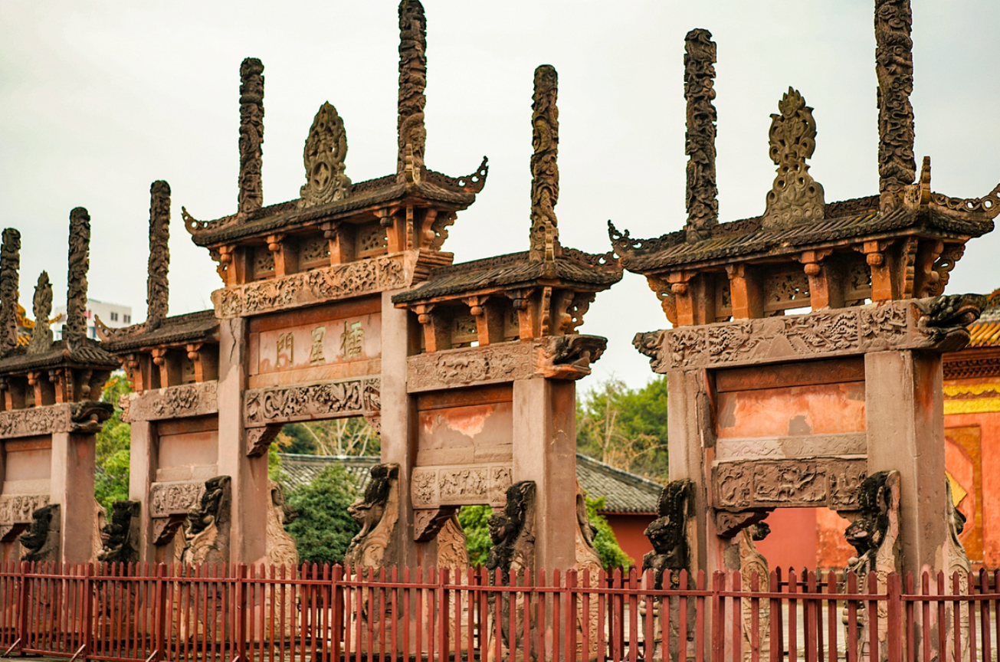
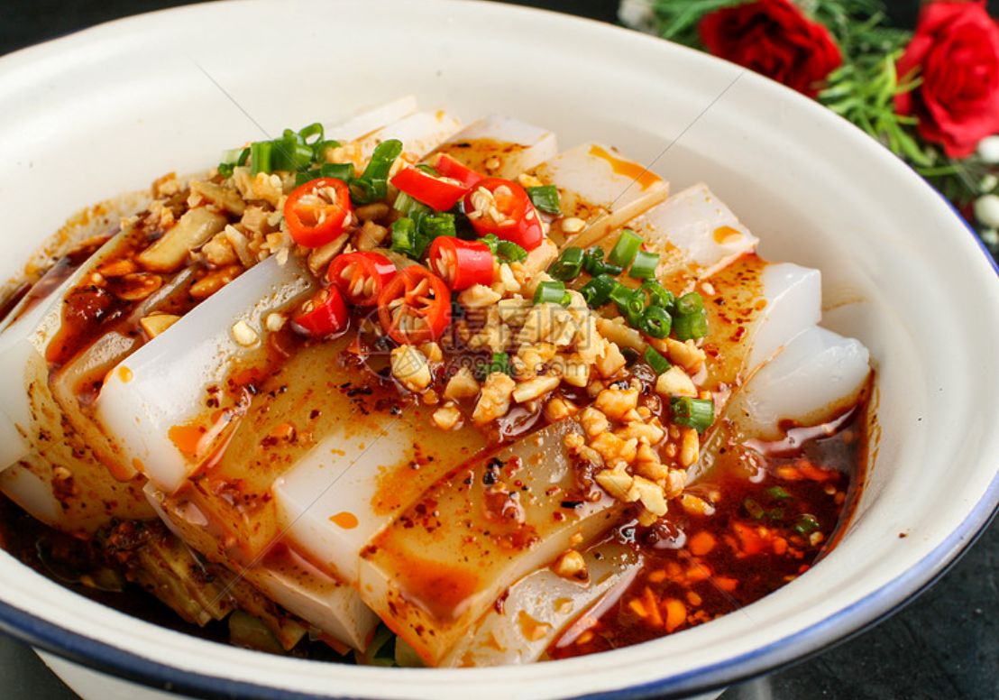
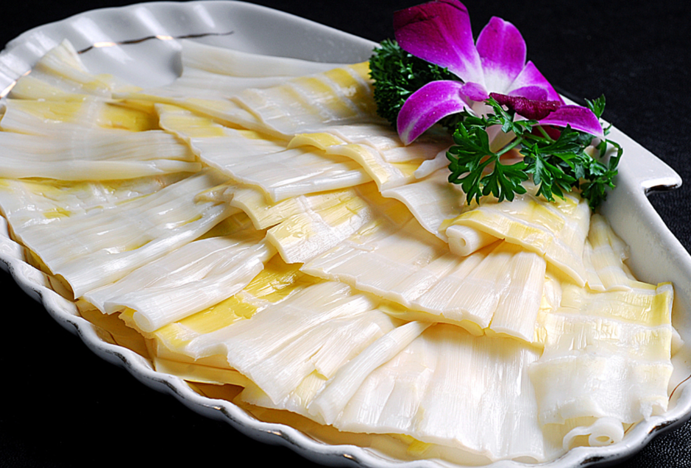
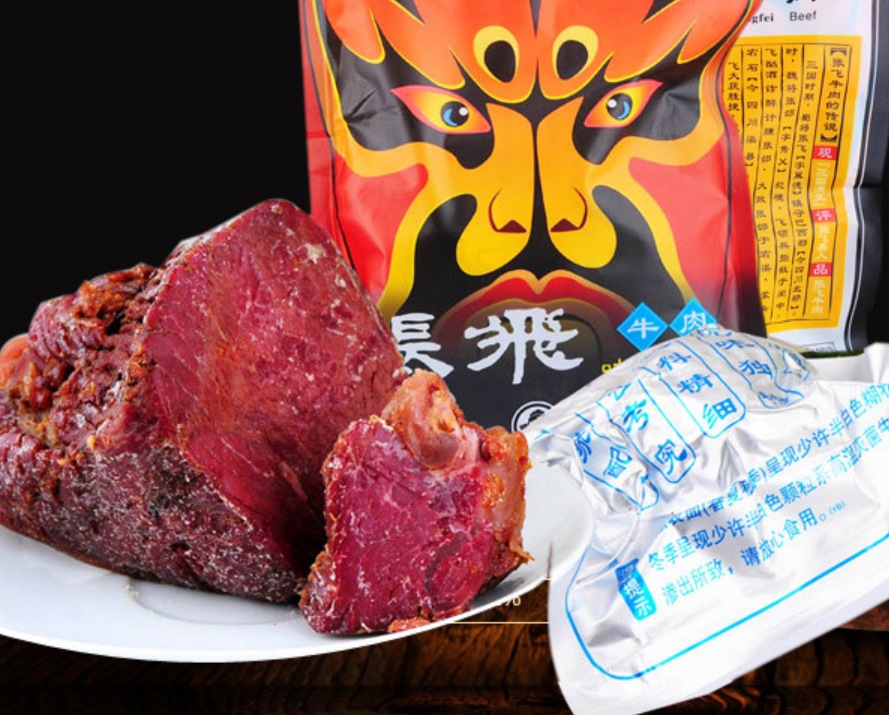

2024德阳美食节
舌尖上的德阳，品味蜀地风情
活动介绍
德阳美食节是德阳市最具影响力的美食文化盛会，自2010年创办以来已成功举办15届。本届美食节以"舌尖上的德阳，品味蜀地风情"为主题，将集中展示德阳及周边地区的特色美食、传统小吃和烹饪技艺。
美食节期间，将有来自全市100多家餐饮企业参展，设置传统美食区、创新美食区、非遗展示区、互动体验区等多个主题区域，为游客提供全方位的味觉体验。
除了美食展示和品尝，本届美食节还将举办德阳厨艺大赛、美食文化论坛、非遗技艺展演等丰富多彩的活动，让游客在品尝美食的同时，深入了解德阳的饮食文化。
特色美食展示
本届美食节将集中展示德阳最具代表性的特色美食，包括传统名菜、地方小吃和创新菜品。以下是部分亮点美食：

孝泉牛肉
德阳传统名吃，选用优质黄牛肉，采用秘制配方卤制而成，肉质鲜嫩，回味悠长。
推荐商家：孝泉牛肉馆

德阳干锅
德阳特色干锅，麻辣鲜香，食材丰富，配以多种香料炒制而成。
推荐商家：德阳干锅王

德阳凉粉
德阳最具特色的小吃之一，选用优质豌豆制作，口感爽滑，麻辣鲜香。
推荐商家：王凉粉

黄许哑巴兔
德阳特色美食，选用新鲜兔肉，配以多种香料和辣椒烹制而成。
推荐商家：黄许哑巴兔总店

绵竹笋子
德阳绵竹特产，选用当地新鲜竹笋，配以腊肉或鸡肉炖煮而成。
推荐商家：绵竹农家乐

张飞牛肉
德阳传统名菜，选用优质黄牛肉，采用秘制配方腌制后风干而成。
推荐商家：张飞牛肉专卖店
活动日程
| 日期 | 时间 | 活动内容 | 地点 |
|---|---|---|---|
| 11月15日 | 09:00-10:00 | 开幕式 | 主舞台 |
| 11月15日 | 10:30-12:00 | 德阳厨艺大赛初赛 | 厨艺展示区 |
| 11月16日 | 14:00-16:00 | 美食文化论坛 | 会议中心 |
| 11月17日 | 10:00-12:00 | 非遗技艺展演 | 非遗展示区 |
| 11月18日 | 14:00-16:00 | 德阳厨艺大赛决赛 | 厨艺展示区 |
| 11月19日 | 19:00-21:00 | 美食节晚会 | 主舞台 |
| 11月20日 | 15:00-16:00 | 闭幕式暨颁奖典礼 | 主舞台 |
交通指南
活动地点
德阳市文化广场（旌阳区长江东路与泰山北路交叉口）
公共交通
公交车：可乘坐1路、5路、12路、15路公交车至"文化广场站"下车
出租车：从德阳站打车约15元，从市区各地打车约10-20元
自驾停车
活动现场周边设有多个停车场：
- 文化广场地下停车场（500个车位）
- 德阳体育馆停车场（300个车位）
- 周边商场停车场（建议停放在洋洋百货或沃尔玛停车场）
参与方式
本届美食节免费向公众开放，游客可直接前往活动现场参与。
如需参加厨艺大赛、美食论坛等特定活动，请提前通过以下方式报名：
咨询电话：0838-1234567
官方微信公众号：德阳美食节